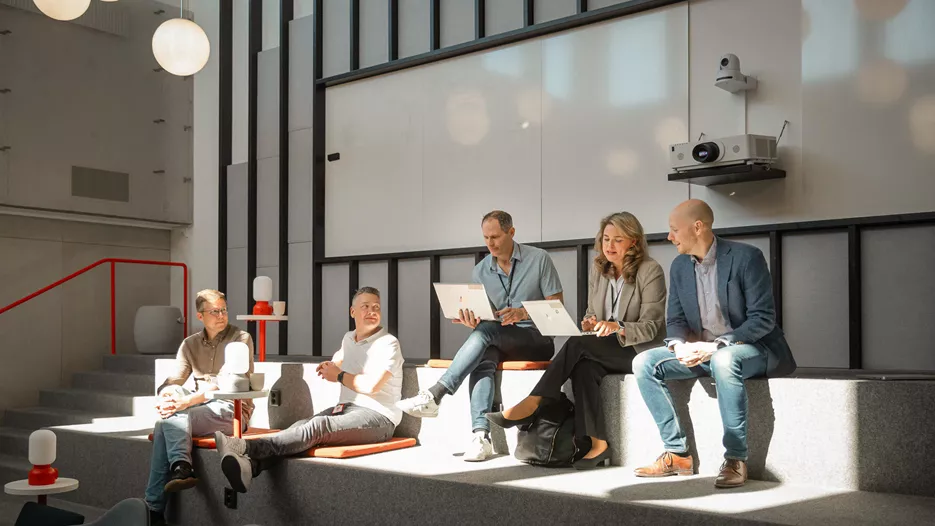
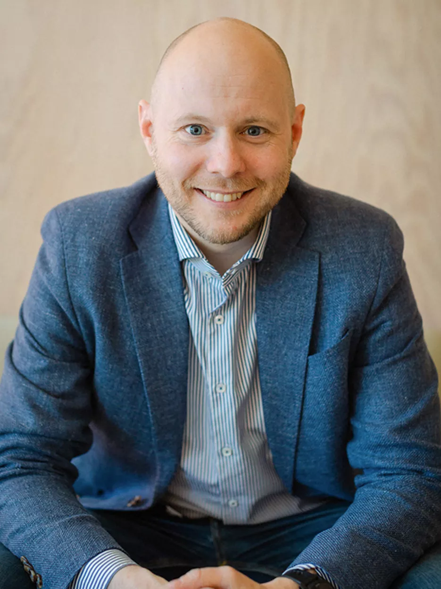

Personlig affärsplan 2026
Mitt fokus är att hjälpa Svenska Spel gå från stark AI-rörelse till styrd affärseffekt: färre manuella moment, kortare ledtider, högre kvalitet och en kostnadsmodell som gör värdet synligt.
Kärntes
Vi har redan fart: workshops, AI-forum, champions, konkreta initiativ och agentiska arbetssätt. Nästa ledarskapsutmaning är att säkra att effekterna inte stannar som inspiration, användningsgrad eller enskilda succéer.
Min verksamhetsutmaning blir därför att etablera ett arbetssätt där varje större AI-initiativ kopplas till baseline, effektmål, kostnad, ansvar och återkommande uppföljning.
Inte fler piloter. Fler bevisade förbättringar.
Fokus: effekt, kvalitet, kostnad och beteendeförändring.AI som basförmåga
Atea beskriver Svenska Spels AI-resa som en förflyttning där AI blir en organisationsförmåga, inte ett separat verktyg. Det är precis där effekthemtagningen blir avgörande.
När engagemanget redan finns i forum, champions och konkreta initiativ behöver nästa steg bli mer systematiskt: tydligare prioriteringar, gemensamma arbetssätt, bättre effektmätning och starkare koppling mellan AI-initiativ och affärsmål.

Koppling till AI-strategin
Effekthemtagningen behöver spegla samma målbild som AI Enablement redan driver: AI ska vara en möjliggörare för affärsplanen, inte ett separat teknikspår.
AI reducerar manuellt arbete och väntetider. Det frigör tid, höjer kapacitet och gör att bättre beslut kan tas snabbare.
Affären får snabbare tillgång till relevanta insikter genom data, semantik och agentisk analys snarare än manuell rapportering.
AI möjliggör mer personlig, adaptiv och ansvarsfull kunddialog som stärker relation, lojalitet och hållbar tillväxt.
Mätmodell
Det räcker inte att mäta hur många som använder ett AI-verktyg. Vi behöver mäta hur arbetet, besluten och resultaten faktiskt förändras.
Välj 3-5 återkommande arbetsflöden och mät nuläge: tid per uppgift, ledtid, kvalitet, kostnad och kund-/medarbetareffekt.
Mät snabbhet tillsammans med kvalitet, annars riskerar vi att bara flytta problemet från produktion till granskning.
Jämför liknande team, sprintar eller processer med hög och låg AI-användning för att isolera effekt bättre.
Följ tokens, licenser, modellval och driftkostnad mot frigjord tid, ökad kapacitet, riskreduktion och kundvärde.
Principer för hemtagning
Varje initiativ ska ha ett enkelt kontrakt innan det skalas.
När kostnad flyttas från människa till teknik behövs styrning som syns i vardagen.
Mitt bidrag och åtagande
Min roll blir att skapa riktning, metod och tempo så att verksamheten kan äga effekten, medan AI Enablement ger struktur, stöd, plattformar och lärande.
Prioritera återkommande arbetsflöden där AI redan används eller där potentialen är tydlig.
Mät nuläge på tid, ledtid, kvalitet, kostnad, risk och upplevd nytta.
Kombinera systemdata, pulsmätning och chefsobservation för att fånga verklig förändring.
Besluta vad frigjord tid ska användas till: mer kapacitet, bättre kvalitet, kortare ledtid eller lägre kostnad.
Sprid mönster, mätetal, agentinstruktioner och goda exempel via forum och champions.
2026-upplägg
Välj 3-5 kandidater från AI-forum och Tech. Definiera baseline, ägare och hypotes för varje initiativ.
Testa mätpaketet med systemdata, pulsmätning och observation. Följ även konsumtionskostnad och modellval.
Visa vilka effekter som är bevisade, vilka som kräver justering och vad som ska skalas eller stoppas.
Förankra mall, ansvar och rapportering inför 2027 så att nya AI-initiativ startar med effektlogik från dag ett.
Mitt ledarskap
För att lyckas behöver jag växla mellan tre ledarskapslägen: expertens skärpa, achieverns riktning och katalysatorns förmåga att skapa ägarskap hos andra.

Min ledaruppgift är att hålla ihop målbild, styrning och lärande så att AI blir något människor kan använda, inte något som händer ovanför dem.
Hålla ihop omvärld, affärsplan, teknikutveckling, kostnadsbild och organisationsförmåga.
Skapa win-win mellan KL, AO/KF, Techledning, DevEx, compliance, ekonomi och AI-forum.
Fatta tydliga beslut om prioritering, mätetal, ansvar och vilka beteenden som behöver ändras.
Mitt pris
Rätt att kräva baseline och effektmål innan större AI-initiativ skalas.
AI-forum och champions behöver skyddad tid för test, lärande och uppföljning.
Stöd för att översätta frigjord tid och teknikkostnad till trovärdig affärseffekt.
Agentinfrastruktur, dataåtkomst, säkerhet, modellstyrning och återanvändbara mönster.
Källkoppling
Summeringen väver ihop din verksamhetsutmaning med AI Enablements målbild, KL-materialets mätprinciper, TechLed-workshopens effekthemtagning och LU-modulens struktur för personlig affärsplan.